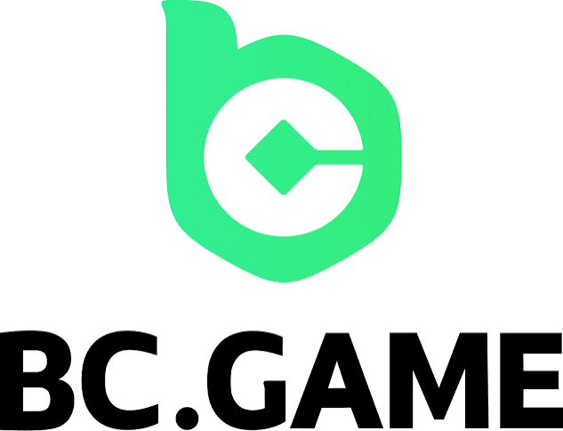

MilanNapoli
SPORTCALCIOLIVEOGGIAPRI N1BET
PALINSESTO
Partite e mercati 1X2
JuventusInter
RomaLazio
Real MadridManchester City
LiverpoolArsenal
AtalantaFiorentina
FantasyTeam non è più operativoPer giocare oggi usa una piattaforma attiva del confronto.
Recensione FantasyTeam scommesse 2026: panoramica generale
Bonus e promozioni di FantasyTeam scommesse
Il benvenuto sport è lineare: 50% sulla prima scommessa fino a un massimo di 25€, inserendo il codice BENVENUTO50 in fase di registrazione. La cosa bella? Il bonus arriva a prescindere dall'esito della prima giocata refertata, vinta o persa che sia.
| Condizione | Dettaglio |
|---|---|
| Importo | 50% fino a 25€ |
| Codice promo | BENVENUTO50 |
| Deposito minimo | 10€ |
| Prima giocata | entro 48 ore, multipla con almeno 3 eventi |
| Quota totale minima | 4.00 (quota min 1.50 per evento, sistemi esclusi) |
| Rollover | 1x |
| Riscatto | entro 30 giorni, multipla con almeno 4 eventi a quota min 1.50 ciascuno |
Tra le promo ricorrenti spiccano il Bonus Ricarica estivo (100% fino a 10€ con codice SUMMER10), il Bonus Multipla fino a +130% sulla vincita — parte dal 5% con 5 eventi a quota minima 1.25 e sale fino a 30 selezioni — e gli Instant Bonus variabili legati al palinsesto. Nessun bonus senza deposito, e mettiamolo in chiaro subito: chi lo cerca qui, resta a bocca asciutta.
Condizioni e codici promo cambiano spesso: verifica sempre importi, scadenze e requisiti sulla pagina promozioni ufficiale prima di aderire.
Palinsesto, mercati e quote di FantasyTeam
La lavagna copre 10 discipline più 3 campionati virtuali: calcio in primis, poi basket, tennis, snooker, cricket e futsal, tra le altre. Sul calcio si scende in profondità — Serie A, B e i principali campionati esteri con i mercati classici (1X2, under/over, gol/no gol, handicap asiatici, marcatori) — mentre su basket e tennis l'offerta c'è, ma non è enciclopedica.
I campionati virtuali (i cosiddetti fantasy match) sono eventi simulati generati da software: partite con esito casuale certificato, che girano di continuo a ciclo rapido — un nuovo evento ogni pochi minuti, senza attendere il calendario reale. I mercati disponibili sono ridotti rispetto allo sport vero (in genere 1X2 e risultato esatto), e vanno considerati un intrattenimento a sé, slegato dalle competizioni reali. Per il dettaglio dei tornei virtuali attivi conviene controllare direttamente sulla lavagna dell'operatore.
TOP 8
01Classifica completa
 Jack100 giri gratis con un deposito di 50 $★ 3.8GIOCA ORA08
Jack100 giri gratis con un deposito di 50 $★ 3.8GIOCA ORA08
BC GameNessun bonus casinò fornito★ 3.7GIOCA ORAValutazioni editoriali comparative. Nessun risultato è garantito.
Scommesse live e streaming su FantasyTeam
La sezione live fa il suo dovere: eventi in tempo reale sulle discipline principali, quote che si aggiornano in fretta e bolletta che si adatta al volo alle variazioni. Niente di rivoluzionario. Ma durante il test non abbiamo beccato lag fastidiosi né sospensioni infinite delle quote nei momenti caldi.
Il limite vero però è un altro: niente live streaming. Le partite non le guardi sulla piattaforma, punto. Tocca arrangiarsi con le statistiche live e la grafica animata degli eventi, che comunque aiuta a seguire l'andamento.
App mobile, giocabilità e navigazione
Il desktop offre un design pulito, sfondo scuro e testi bianco/blu, con il toggle per passare al tema chiaro. Muoversi tra sport, live e casinò è intuitivo.
Registrazione, metodi di pagamento e prelievi
L'iscrizione chiede nome, cognome, email, telefono, codice fiscale e la scelta di username e password. Il documento d'identità va caricato entro 30 giorni, altrimenti il conto viene sospeso. Meglio farlo subito, per non ritrovarsi i prelievi bloccati sul più bello.
Sul fronte pagamenti c'è tutto quello che serve al giocatore italiano:
| Metodo | Deposito minimo | Note |
|---|---|---|
| PayPal | 5€ | accredito immediato |
| Postepay / carte di credito | 5€ | immediato |
| Skrill / Neteller | 5€ | prelievi tra i più rapidi |
| Paysafe Card | 5€ | solo deposito |
| Crypto / da app | da 1€ | soglia minima ridotta |
I prelievi seguono i tempi tipici degli e-wallet (24-48 ore dopo l'approvazione) e delle carte (2-5 giorni lavorativi), con verifica KYC obbligatoria prima del primo incasso. Metodi disponibili, soglie e tempistiche possono variare: conferma le condizioni aggiornate nella sezione pagamenti ufficiale (dati verificati a gennaio 2026).
Sicurezza, affidabilità e assistenza clienti
La licenza GAD 15232 garantisce quote certificate, fondi segregati e strumenti di gioco responsabile: limiti di deposito, autoesclusione e autolimitazione si impostano dal conto, come vuole l'ADM. La connessione è cifrata SSL.
L'assistenza è uno dei punti forti: live chat, telefono, email (supporto@fantasyteam.it) e perfino Skype. Nel nostro test la chat ha risposto entro poche ore, in linea con il tempo dichiarato di 24 ore — tempistiche indicative, non una garanzia contrattuale. Manca un numero verde gratuito dedicato ai giocatori: per orari, numero telefonico attivo e recapiti aggiornati fai riferimento alla pagina contatti ufficiale. Il canale più veloce resta comunque la chat.
Vantaggi e svantaggi di FantasyTeam scommesse
Contro: - Importo del bonus contenuto (max 25€) - Nessun live streaming - Cash out parziale e quick bet assente - Niente bonus senza deposito - VIP Club riservato al solo casinò
Verdetto finale sulla recensione FantasyTeam
Voto finale: 7/10 . FantasyTeam non è il bookie che ti fa gridare al miracolo con bonus da migliaia di euro. Però è un operatore ADM onesto, con condizioni promozionali trasparenti e davvero sbloccabili — e non è cosa da poco, visto quanti concorrenti promettono e poi complicano tutto. Chi cerca streaming, cash out sistematico o lavagne sterminate farà meglio a guardare altrove.
FAQ su FantasyTeam scommesse
FantasyTeam offre un bonus di benvenuto sulle scommesse? Sì: 50% sulla prima scommessa fino a 25€ con codice BENVENUTO50, erogato a prescindere dall'esito. Deposito minimo qualificante 10€, prima giocata entro 48 ore.
Esiste un bonus senza deposito su FantasyTeam? No, al momento non c'è nessun bonus senza deposito, né per lo sport né per il casinò.
FantasyTeam ha un numero verde? No, niente numero verde gratuito: l'assistenza risponde via live chat, telefono, Skype ed email (supporto@fantasyteam.it), con tempi dichiarati entro 24 ore.
Qual è il sito migliore per le scommesse? Non esiste un "migliore" assoluto: dipende da cosa cerchi. FantasyTeam si difende bene per chi punta su multiple grazie al rollover 1x e al Bonus Multipla, ma chi vuole live streaming o cash out esteso troverà operatori più completi. Confronta sempre licenza ADM, bonus e mercati in base al tuo stile di gioco.